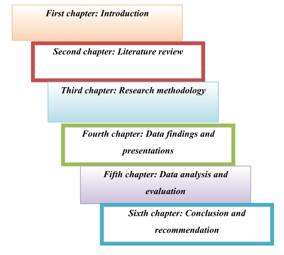
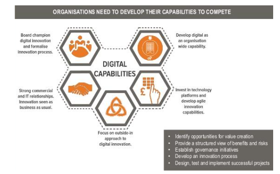
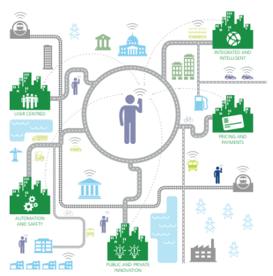
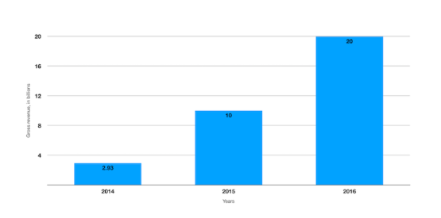
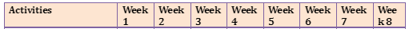
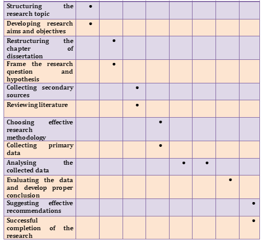

A Critical Evaluation of the impact of digital innovation on london
Introduction
Rationale of the research
Digital innovation is to take the initiatives and develop new business model for gaining high competitive advantage over competitive brands in the market (Wu et al., 2015; Intelligent Transport, 2016). Recently, in the era of privatisation, all the corporate brands are focusing on digital innovation in order to gain high competitive advantage and it further helps the managers and leaders to utilise the organisational resources and capabilities successfully in long run (World Economic Forum, 2015). Hereby, all the firms operating in the market aim at enhance technological innovation in the business in order to enhance their performance and meet the organisational objective strategically (Sørensen and Landau, 2015). In the recent years, digital innovation provides a scope to the companies to generate sales volume and profitability in long run and run the business successfully (Intelligent Transport, 2016). Discover additional insights on mechanical assignment help for academic purpose to our other resources hub.
There is effective role of digital innovation on the transportation industry in London as digital innovation make the operational activities fast and efficient in the transportation industry which further enhances the business performance of the transportation companies like UBER, My Taxi, Gett and Addison Lee (Intelligent Transport, 2016). The influence of digital innovation furthers the experience of the customers as well as other stakeholders of the transportation industry in London (Sørensen and Landau, 2015). Digital innovation further enhances the performance of the business activities in the transportation industry in London and in this regard it is necessary to analyse the impacts of digital innovation on the transportation industry (Innovation tactics, 2018). The adoption of digital innovation further provides a scope to the business to deliver high quality service with safety and efficiency (Sørensen and Landau, 2015).
Research aims and objectives
The aim of the dissertation is to analyse the impacts of the recent digital innovation on the London transportation mainly on the UBER Corporation. To meet the aim of the research, the research will develop four objectives which are,
Research questions
The questions of the research are,
- What is the importance of recent digital innovation?
- What is the role of digital innovation in the transportation system of London?
- What are the impacts of digital innovation on the business operations of UBER Corporation?
- What will be the suggested solutions through which the UBER Corporation can improve their digital innovation for improving their performance?
Hypothesis
The H1 is the alternative hypothesis which shows there is impact of digital innovation on UBER and H0 is the null hypothesis which implies that there is no effect of digital innovation on London transportation system. Through proper analysis and evaluation, it is possible to test the hypothesis and meet the objective of the research.
H1: There is effective impact of digital innovation on the London transportation system mainly in UBER Corporation
H0: There is no such effect of digital innovation on the London transportation system mainly in UBER Corporation
Structure of the dissertation
The first chapter of the dissertation is the introduction in which the researcher will develop research aims, objectives, questions and hypothesis to set effective planning to conduct further studies for successful completion of the dissertation. Moreover, the background of the organisation and rationale of the research are discussed in this chapter. The second chapter is literature review where the researcher represents the collected literatures, existing theories and practice related to the research topic. After the literature review, there is methodology of the research where the researcher will select appropriate techniques of data collection and analysis technique for doing the study in a systematic way. The third chapter also includes the time frame of doing the research as well as ethics of doing the research.
The fourth chapter is data collection and representation and the fifth chapter will be the data analysis and evaluation where the researcher will aim at analysing the data and evaluate it to test the hypothesis. The sixth chapter explains the conclusion and recommendation for the selected company and apart from that future scope of the research and limitation of the research will also be discussed in the last chapter.
Literature review
Concept of digital innovation
In such an era of globalisation, the process of digital innovation and transformation is increasing in the field of transportation, logistics, e-commerce etc (Intelligent Transport, 2016). The corporate firms are focusing on more digital innovation in order to make the business more efficient and improve the performance so that it is possible to create digital capabilities (Curley and Salmelin, 2017; Sørensen and Landau, 2015). Digital innovation is effective where the companies try to analyse the market by gathering. Relevant market information as well as track the customer’s demands successfully (Wu et al., 2015). Through digital innovation, the companies also can manage their economies of scale which further helps to maintain the cost of the production and this is an effective way to set affordable price or the products and services so that the customers can make effective purchase decision (Nylén and Holmström, 2015). Implementing the Information Technology infrastructure and mapping system as well as customer tracking facilities are some of the innovative proves for running the business sustainably (Intelligent Transport, 2016).
Strong commercial partnership and Information technology relationship are helpful to make innovative business and create values for all the stakeholders including the customers, employee’s shareholders and managers (Sørensen and Landau, 2015). Investment in technology is helpful for the business activities where the employees can do their responsibilities efficiently and timely which further faster the operation in long run. Through digital innovation and implementation of Information technology, the corporate firms can increase organisational capability and enhance the internal and external communication which is necessary for values creation and profit maximisation (Sørensen and Landau, 2015). Implementing the Information and Communication Technology, developing company’s website, promoting the brand through social media and developing mobile application for selling the products and services are some of the innovative processes of the corporate firms in making their brands unique and strengthening customer’s base in long run (Wu et al., 2015).
Digital innovation in UBER Corporation
Digital innovation in UBER is effective to enhance the performance of the stakeholders which includes the management team, drivers and other shareholders. Partnership with Maps, GPS, Payment, cloud storage and Data analytics as well as hiring care partners, insurances and financing partners are the result of digital innovation in UBER where the aim of the company is to create values for their customers (PWC, 2018). The mobile application of UBER is useful to retain more clients in the business which further provides a scope to generate revenue in long run. First pick up option is one of the latest innovations of the company through which the organisation can serve the customers on urgency basis (Dodgson et al., 2015). In addition to these, Maps is effective to track the pickup location of the customers as well as the destination of the clients which further improves the quality of the organisational services (PWC, 2018).
Cashless transaction through providing discount coupons as well as the strategy of lower price further helps the company to strengthen their customer’s base. The application is also effective to provide estimated fare and duration of the ride which further helps the customers to choose the best riding option (Dodgson et al., 2015). These features are the example of digital innovation in the UBER Corporation which enhances the performance of the business. Tap a button, get a ride option is also effective where the customers can get vehicle details and the drivers can get the destination of the customers (McKissen, 2017). Availability of 24*7 as well as efficiency of the drivers further provides a scope to the company to enhance their performance and expand the business across the globe. Mobile application and business innovation are therefore the critical success factors of the company where the customers can choose their ride as per their preferences on time and cost (Wood et al., 2017; Notelet, 2015).
Impacts of digital innovation on transportation industry
There are crucial impacts of digital innovation in the transportation industry in London as it helps to fast and easy transportation through which the transportation companies can deliver quality service to the customers (Dodgson et al., 2015). The digital innovation is enabling smart mobility services where the companies like UBER can develop user centric business model. Through the user centred model, the public transport become personal and the customers can enjoy their ride successfully (Bureau, 2017). This change is helpful for improving operational activities where the company can meet the priorities and needs of the customers successfully (Dodgson et al., 2015).
The transport network becomes integrated and intelligent through the digital innovation where the online application is useful for tracking the customers and providing the best services as per the requirements and preferences of the corporate clients (Notelet, 2015). In addition to these, pricing and payments of the transportation industry become seas where the customers can pay online as well as in cash as per their preferences. For example, the mobile application of UBER Corporation is effective to retain more customers and manage them successfully (Horn, 2016; PWC, 2018). Apart from that, the customers can also pay in online and offline model as per their choices (Tute, 2017). Hereby, the digital innovation is helpful for the transportation industry in London as it enhances the operational activities and improves the service quality by making the user centred service (Dodgson et al., 2015).
Increasing safety and security of the customers are also other benefits for which there are many customers who prefer in using UBER. The company is therefore beneficial for such digital innovation as it is possible to retain more clients and build, strong relationship with them (PWC, 2018). Digital innovation is also beneficial for sustainability of transport system which further ensures growth and development of the transportation industry in London (Intelligent Transport, 2016). The digital innovation also has positive impacts on the UBER Corporation and as per the figure below; there is high growth in the revenue of the company due to digital innovation and technological advancement. It was doubled in 2016 as compared to the year 2014 and in 2016 there was 20 billion revenue of UBER where the managers and leaders focus more on digital innovation for retaining more customers and maximising the organisational profitability (Dogtiev, 2018).
Digital innovation is therefore beneficial for the overall transportation industry as it eliminates other transaction cost and enhances the performance of the employees (PWC, 2018). Utilising the cutting edge of technology is also advantageous as it helps to make flexible payment method as well as it becomes more easy for the customers to access the services of the transportation companies (Cleverism, 2018). Transparency and accountability in the transportation industry can also be maintained through digital innovation where the drivers and other internal staff members track the travel through technology (Wu et al., 2015). Convenient and frictionless payment structure as well as availability of the transportation system is also other benefits o digital innovation where the customers can travel safely and the employees focus at maximising the satisfaction of the customers by delivering quality service at effective price.
Research methodology
Through research methodology, it is possible for the researcher to choose appropriate methods of doing the research and evaluate the findings successfully. In this regard, the researcher will choose deductive approach irrespective of choosing inductive approach where the deductive approach is useful to analyse the collected data on the basis of existing theories and concepts related to the research topic. Apart from that, the research is useful for analysing the impacts of digital innovation on the London transportation mainly on the business activities of UBER Corporation. There are two types of data collection technique which are primary and secondary and in this research; the researcher will choose both the data collection method. The researcher will try to collect secondary sources including books, journals and articles for gathering effective information so that he or she can improve their skill and knowledge and will do in depth analysis further. In order to collect primary data for this research, the researcher will select the interview and survey questionnaire. In this regard, the researcher will arrange interview with the managers of the UBER Corporation for collecting internal information regarding the company. On the other hand, the researcher targets the two main groups of stakeholders of the company UBER which are customer group and the group of the drivers who are working in the organisation. Arranging the questionnaire is useful for the researcher to collect relevant information from the customers and employees. The data collection is therefore effective where the researcher can understand the impacts of the digital innovation and its impacts on the UBER Corporation. The feedback of the customers and drivers is important in this regard to identify the impacts of digital innovation in the UBER Corporation. Qualitative and quantitative analysis are the two ways for data analysis and in this regard, the researcher will choose the qualitative analysis technique for analysing the collected data (Robson and McCartan, 2016). In this regard, collected data are analysed and evaluated on the basis of existing secondary information which will provide a scope to evaluate the collected information successfully (Bryman and Bell, 2015). The researcher will choose 5 managers of the company for interview and will consider 50 customers and 50 drivers in order to collect their feedback through survey. The researcher will convince the participants to respond in the survey and cooperate for completing the research successfully. In addition to these, maintaining ethics for doing the research without any legal issue is essential for completing the study successfully within the appropriate time frame. In this regard, the researcher will follow the Data Protection Act 1998 to protect the collected data from the managers, drivers and customers and convince them to provide authentic data.
 